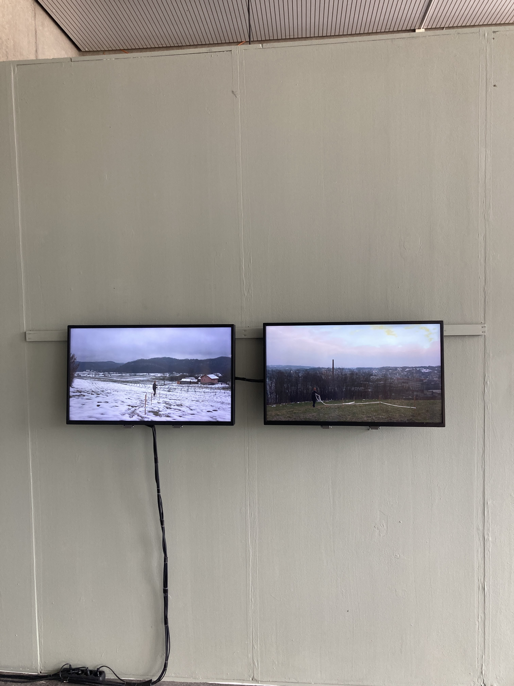
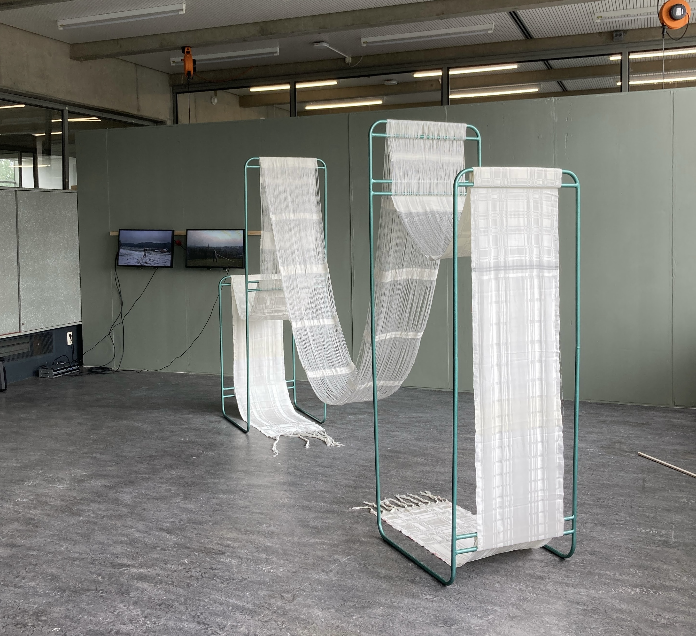
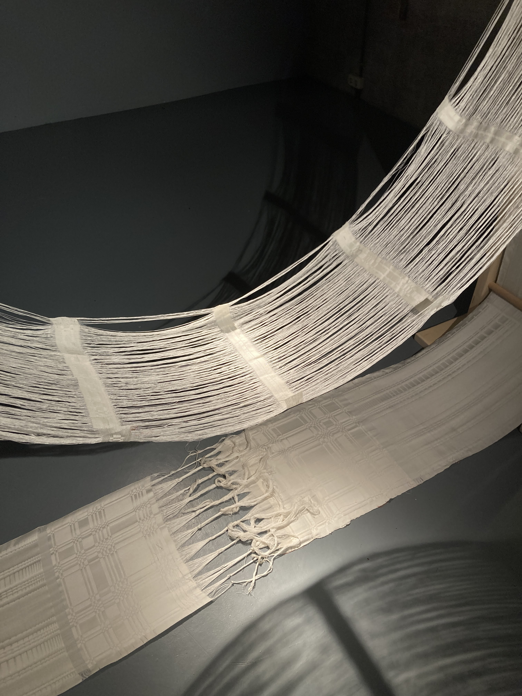
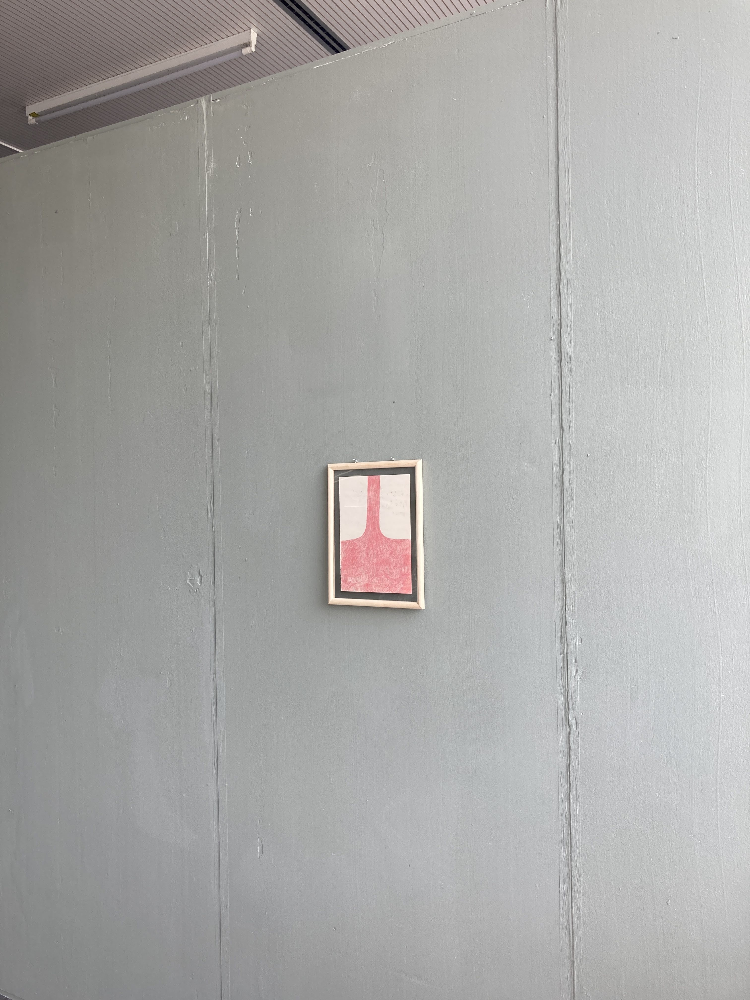

'the space between the mountains' (2023)

‘The space between the mountains’ is an installation following my persistent longing for mountains and a visit to an abandoned factory. It consist of a 16 metre handwoven damast, that is hung on a metal structure in the colour of factory machines. There are two video’s in the background, of myself winding the warp (the basis of a weaving) in two different landscapes. There is also a drawing of a red tree/ waterfall shape.

This project had its beginning in a clandestine visit to an abandoned textile factory in Duga Resa, Croatia, from which I took all kinds of artefacts that were left behind; pieces of cloth, notebooks, stamps, sample books, even some yarns. Through diving into the archives, I was confronted with the modus operandi of factories; clear rulebooks dictating exactly the process of weaving, utilising red threads to mark mistakes that would mean the fabric was of a lower quality. I took this notation system to draw even closer attention to the already slow process of handweaving.

My homesickness translates to need for spaciousness. The view of faraway mountains guarding the landscape kept repeating in the back of my mind, the shape smoothed by memory into an abstraction of a valley. A theme that has always been the background of the work I make is space. Our relation to it, but also how it shapes us. This work specifically came forth from a longer process of considering how I am shaped by the transplantation from Croatia to the Netherlands and what I feel I lack in the space that surrounds me now. A reoccurring longing is towards the mountains; a gap that does not feel the need to be filled. This has been my frustration with Dutch space; always already filled in, allocated to a specific use, cramped. This crampedness was contrasted when I saw a video of women making a warp, outstretched on a hill. The possibility of taking in that space, of spaciousness, felt like a breath of fresh air. That feeling I wanted to emulate through making a fabric that would similarly take in space, let light and air through. Creating this installation was to bring a landscape inside.

